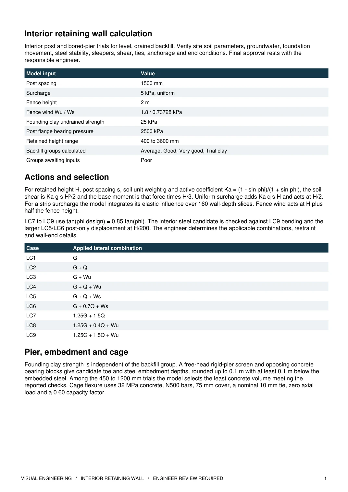

Interior retaining wall
At 1.50 m post spacing and 1.80 m retained height, the trial clay example gives a base moment of 42.867 kNm in LC9. The candidate schedule shows a 200UB18.2 post and a 600 mm diameter bored pier with a 2.9 m drilled depth, 1.2 m steel embedment and a 12-N12 cage.
The wall has a 5 kPa uniform surcharge. The assumed founding clay has an undrained strength of 25 kPa. Compare the worked height with the other backfills and inspect their service movements, section resistances and pier checks. Poor backfill awaits soil inputs. The responsible engineer verifies the site conditions and the detail before specifying construction.
Loading the report…
